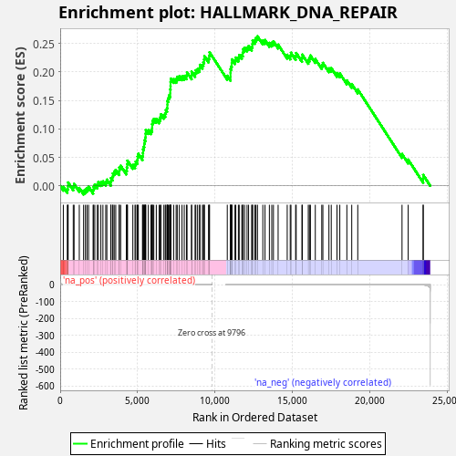
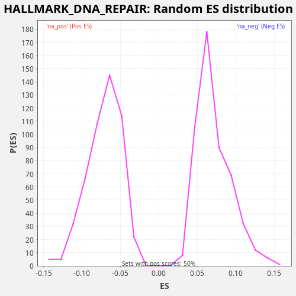

| Dataset | CCLE |
| Phenotype | NoPhenotypeAvailable |
| Upregulated in class | na_pos |
| GeneSet | HALLMARK_DNA_REPAIR |
| Enrichment Score (ES) | 0.262948 |
| Normalized Enrichment Score (NES) | 3.668097 |
| Nominal p-value | 0.0 |
| FDR q-value | 0.0 |
| FWER p-Value | 0.0 |

| SYMBOL | RANK IN GENE LIST | RANK METRIC SCORE | RUNNING ES | CORE ENRICHMENT | |
|---|---|---|---|---|---|
| 1 | ERCC2 | 202 | 0.338 | -0.0017 | Yes |
| 2 | CDA | 460 | 0.047 | -0.0056 | Yes |
| 3 | PDE6G | 498 | 0.038 | -0.0003 | Yes |
| 4 | NELFE | 513 | 0.035 | 0.0059 | Yes |
| 5 | DDB2 | 843 | 0.011 | -0.0011 | Yes |
| 6 | RRM2B | 897 | 0.009 | 0.0035 | Yes |
| 7 | ITPA | 1233 | 0.004 | -0.0037 | Yes |
| 8 | RFC3 | 1510 | 0.003 | -0.0085 | Yes |
| 9 | SURF1 | 1627 | 0.002 | -0.0066 | Yes |
| 10 | SUPT5H | 1730 | 0.002 | -0.0040 | Yes |
| 11 | POLH | 1832 | 0.002 | -0.0014 | Yes |
| 12 | POLD1 | 2125 | 0.001 | -0.0069 | Yes |
| 13 | APRT | 2157 | 0.001 | -0.0013 | Yes |
| 14 | ADA | 2234 | 0.001 | 0.0023 | Yes |
| 15 | POLR2G | 2396 | 0.001 | 0.0024 | Yes |
| 16 | POLR1D | 2462 | 0.001 | 0.0065 | Yes |
| 17 | PCNA | 2625 | 0.001 | 0.0065 | Yes |
| 18 | LIG1 | 2758 | 0.001 | 0.0078 | Yes |
| 19 | TYMS | 2941 | 0.000 | 0.0070 | Yes |
| 20 | POLR1C | 3012 | 0.000 | 0.0109 | Yes |
| 21 | USP11 | 3267 | 0.000 | 0.0071 | Yes |
| 22 | POLR2H | 3276 | 0.000 | 0.0136 | Yes |
| 23 | POLR2I | 3377 | 0.000 | 0.0162 | Yes |
| 24 | ZNF707 | 3406 | 0.000 | 0.0219 | Yes |
| 25 | SEC61A1 | 3486 | 0.000 | 0.0254 | Yes |
| 26 | DCTN4 | 3586 | 0.000 | 0.0281 | Yes |
| 27 | GTF2B | 3803 | 0.000 | 0.0258 | Yes |
| 28 | PNP | 3816 | 0.000 | 0.0322 | Yes |
| 29 | RPA2 | 3904 | 0.000 | 0.0354 | Yes |
| 30 | TAF13 | 4268 | 0.000 | 0.0269 | Yes |
| 31 | STX3 | 4302 | 0.000 | 0.0324 | Yes |
| 32 | GTF2H1 | 4330 | 0.000 | 0.0381 | Yes |
| 33 | POLR2E | 4346 | 0.000 | 0.0443 | Yes |
| 34 | GUK1 | 4689 | 0.000 | 0.0367 | Yes |
| 35 | TP53 | 4829 | 0.000 | 0.0377 | Yes |
| 36 | ARL6IP1 | 4878 | 0.000 | 0.0426 | Yes |
| 37 | GMPR2 | 4976 | 0.000 | 0.0453 | Yes |
| 38 | TAF10 | 4997 | 0.000 | 0.0513 | Yes |
| 39 | ERCC5 | 5043 | 0.000 | 0.0563 | Yes |
| 40 | GTF2F1 | 5311 | 0.000 | 0.0519 | Yes |
| 41 | SDCBP | 5340 | 0.000 | 0.0576 | Yes |
| 42 | BRF2 | 5348 | 0.000 | 0.0641 | Yes |
| 43 | POLA2 | 5398 | 0.000 | 0.0689 | Yes |
| 44 | TAF12 | 5429 | 0.000 | 0.0745 | Yes |
| 45 | NME1 | 5452 | 0.000 | 0.0804 | Yes |
| 46 | EDF1 | 5502 | 0.000 | 0.0852 | Yes |
| 47 | RPA3 | 5513 | 0.000 | 0.0916 | Yes |
| 48 | XPC | 5522 | 0.000 | 0.0981 | Yes |
| 49 | POLR2C | 5690 | 0.000 | 0.0979 | Yes |
| 50 | POLA1 | 5860 | 0.000 | 0.0977 | Yes |
| 51 | HPRT1 | 5934 | 0.000 | 0.1015 | Yes |
| 52 | GTF2H5 | 5936 | 0.000 | 0.1083 | Yes |
| 53 | DDB1 | 5959 | 0.000 | 0.1142 | Yes |
| 54 | POM121 | 6042 | 0.000 | 0.1176 | Yes |
| 55 | DAD1 | 6204 | 0.000 | 0.1176 | Yes |
| 56 | CMPK2 | 6389 | 0.000 | 0.1167 | Yes |
| 57 | TMED2 | 6461 | 0.000 | 0.1206 | Yes |
| 58 | COX17 | 6504 | 0.000 | 0.1257 | Yes |
| 59 | POLR3C | 6693 | 0.000 | 0.1246 | Yes |
| 60 | GTF2A2 | 6782 | 0.000 | 0.1278 | Yes |
| 61 | VPS37B | 6821 | 0.000 | 0.1330 | Yes |
| 62 | SF3A3 | 6896 | 0.000 | 0.1367 | Yes |
| 63 | NT5C | 6920 | 0.000 | 0.1426 | Yes |
| 64 | MPC2 | 6922 | 0.000 | 0.1494 | Yes |
| 65 | AK3 | 6974 | 0.000 | 0.1541 | Yes |
| 66 | FEN1 | 7022 | 0.000 | 0.1590 | Yes |
| 67 | NELFB | 7102 | 0.000 | 0.1625 | Yes |
| 68 | UMPS | 7103 | 0.000 | 0.1694 | Yes |
| 69 | TSG101 | 7121 | 0.000 | 0.1755 | Yes |
| 70 | ELL | 7125 | 0.000 | 0.1822 | Yes |
| 71 | MPG | 7140 | 0.000 | 0.1885 | Yes |
| 72 | CLP1 | 7323 | 0.000 | 0.1877 | Yes |
| 73 | TARBP2 | 7485 | 0.000 | 0.1877 | Yes |
| 74 | ERCC3 | 7555 | 0.000 | 0.1917 | Yes |
| 75 | POLB | 7692 | 0.000 | 0.1928 | Yes |
| 76 | SAC3D1 | 7863 | 0.000 | 0.1925 | Yes |
| 77 | SNAPC5 | 8008 | 0.000 | 0.1933 | Yes |
| 78 | SUPT4H1 | 8150 | 0.000 | 0.1942 | Yes |
| 79 | NUDT9 | 8188 | 0.000 | 0.1995 | Yes |
| 80 | SSRP1 | 8480 | 0.000 | 0.1941 | Yes |
| 81 | DGCR8 | 8483 | 0.000 | 0.2008 | Yes |
| 82 | IMPDH2 | 8707 | 0.000 | 0.1983 | Yes |
| 83 | TAF1C | 8755 | 0.000 | 0.2031 | Yes |
| 84 | PRIM1 | 8869 | 0.000 | 0.2052 | Yes |
| 85 | SMAD5 | 8995 | 0.000 | 0.2068 | Yes |
| 86 | GPX4 | 9020 | 0.000 | 0.2127 | Yes |
| 87 | RFC2 | 9183 | 0.000 | 0.2127 | Yes |
| 88 | CANT1 | 9241 | 0.000 | 0.2171 | Yes |
| 89 | BCAP31 | 9290 | 0.000 | 0.2220 | Yes |
| 90 | RALA | 9309 | 0.000 | 0.2280 | Yes |
| 91 | AAAS | 9576 | 0.000 | 0.2237 | Yes |
| 92 | AK1 | 9619 | 0.000 | 0.2288 | Yes |
| 93 | ADRM1 | 9642 | 0.000 | 0.2347 | Yes |
| 94 | POLE4 | 10785 | -0.000 | 0.1934 | Yes |
| 95 | POLR2D | 10993 | -0.000 | 0.1916 | Yes |
| 96 | NT5C3A | 10994 | -0.000 | 0.1984 | Yes |
| 97 | GTF2H3 | 10996 | -0.000 | 0.2052 | Yes |
| 98 | RAD51 | 11043 | -0.000 | 0.2101 | Yes |
| 99 | POLR2A | 11076 | -0.000 | 0.2156 | Yes |
| 100 | POLR2K | 11083 | -0.000 | 0.2222 | Yes |
| 101 | POLR2F | 11282 | -0.000 | 0.2207 | Yes |
| 102 | SNAPC4 | 11335 | -0.000 | 0.2254 | Yes |
| 103 | EIF1B | 11503 | -0.000 | 0.2252 | Yes |
| 104 | NUDT21 | 11555 | -0.000 | 0.2299 | Yes |
| 105 | RFC4 | 11720 | -0.000 | 0.2299 | Yes |
| 106 | ALYREF | 11784 | -0.000 | 0.2341 | Yes |
| 107 | POLR3GL | 11801 | -0.000 | 0.2402 | Yes |
| 108 | VPS28 | 11905 | -0.000 | 0.2427 | Yes |
| 109 | RFC5 | 12062 | -0.000 | 0.2430 | Yes |
| 110 | AGO4 | 12161 | -0.000 | 0.2457 | Yes |
| 111 | TK2 | 12359 | -0.000 | 0.2443 | Yes |
| 112 | POLR2J | 12409 | -0.000 | 0.2491 | Yes |
| 113 | NCBP2 | 12421 | -0.000 | 0.2555 | Yes |
| 114 | DUT | 12564 | -0.000 | 0.2563 | Yes |
| 115 | POLL | 12637 | -0.000 | 0.2601 | Yes |
| 116 | SRSF6 | 12734 | -0.000 | 0.2629 | Yes |
| 117 | POLD3 | 13080 | -0.000 | 0.2553 | No |
| 118 | CETN2 | 13221 | -0.000 | 0.2562 | No |
| 119 | RBX1 | 13503 | -0.000 | 0.2512 | No |
| 120 | ZWINT | 13657 | -0.000 | 0.2516 | No |
| 121 | CSTF3 | 13765 | -0.000 | 0.2540 | No |
| 122 | UPF3B | 14067 | -0.000 | 0.2481 | No |
| 123 | ADCY6 | 14654 | -0.000 | 0.2303 | No |
| 124 | RNMT | 14847 | -0.000 | 0.2291 | No |
| 125 | DGUOK | 14896 | -0.000 | 0.2339 | No |
| 126 | RAE1 | 15197 | -0.000 | 0.2281 | No |
| 127 | BOLA2 | 15234 | -0.000 | 0.2334 | No |
| 128 | NELFCD | 15604 | -0.000 | 0.2247 | No |
| 129 | NFX1 | 15629 | -0.000 | 0.2306 | No |
| 130 | CCNO | 16014 | -0.000 | 0.2213 | No |
| 131 | NME4 | 16088 | -0.000 | 0.2250 | No |
| 132 | MRPL40 | 16153 | -0.000 | 0.2292 | No |
| 133 | REV3L | 16467 | -0.000 | 0.2229 | No |
| 134 | GTF3C5 | 16884 | -0.000 | 0.2122 | No |
| 135 | ERCC4 | 16956 | -0.000 | 0.2160 | No |
| 136 | TAF6 | 17347 | -0.000 | 0.2065 | No |
| 137 | BCAM | 17497 | -0.000 | 0.2070 | No |
| 138 | ERCC1 | 17868 | -0.000 | 0.1983 | No |
| 139 | POLD4 | 18049 | -0.001 | 0.1976 | No |
| 140 | ERCC8 | 18504 | -0.001 | 0.1853 | No |
| 141 | NME3 | 18819 | -0.001 | 0.1789 | No |
| 142 | RAD52 | 19208 | -0.001 | 0.1694 | No |
| 143 | HCLS1 | 22065 | -0.035 | 0.0560 | No |
| 144 | NPR2 | 22463 | -0.076 | 0.0461 | No |
| 145 | PDE4B | 23430 | -1.426 | 0.0122 | No |
| 146 | VPS37D | 23431 | -1.433 | 0.0191 | No |

{kind=link}
{kind=link}